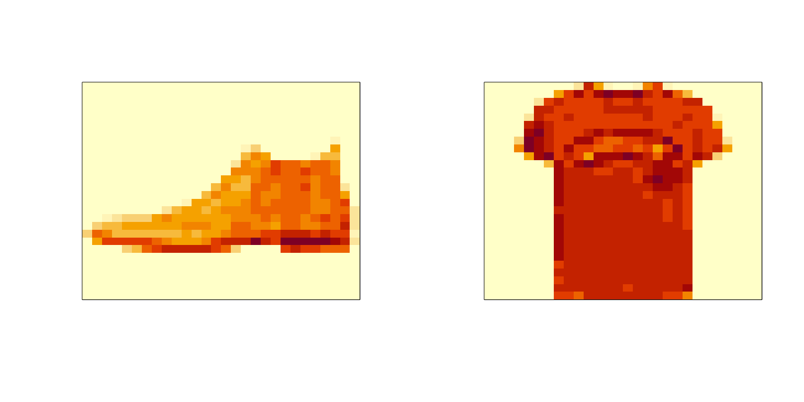
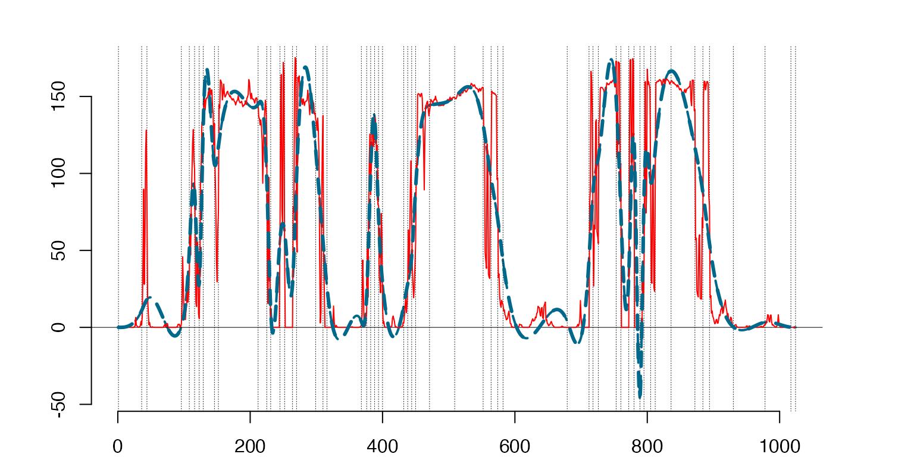
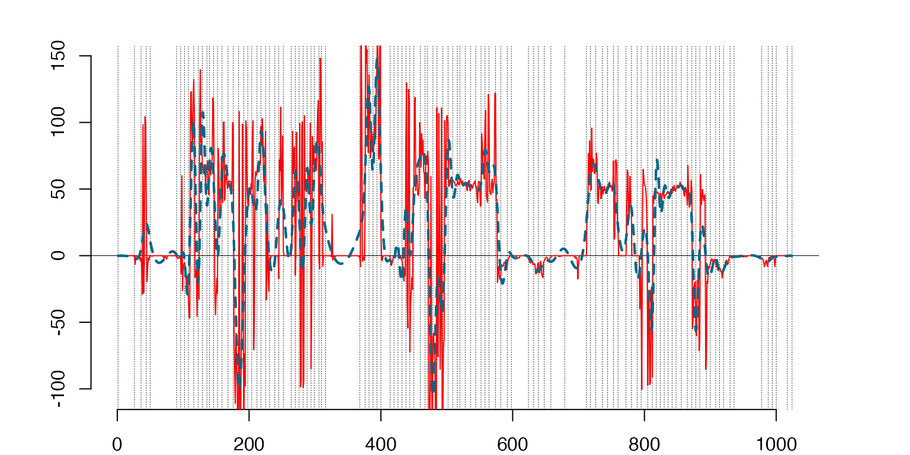
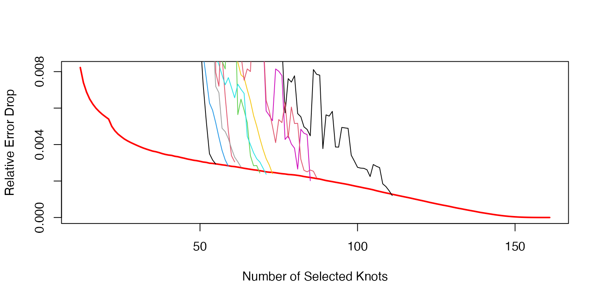
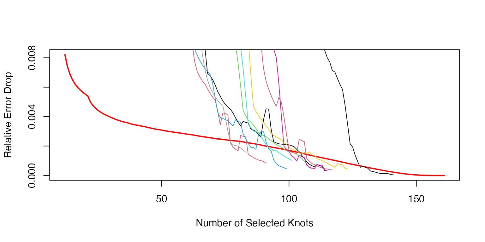
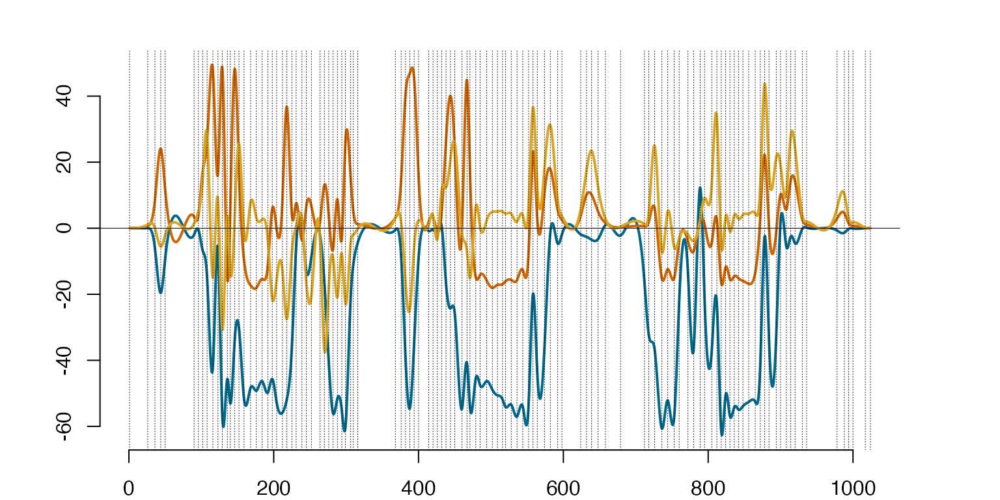
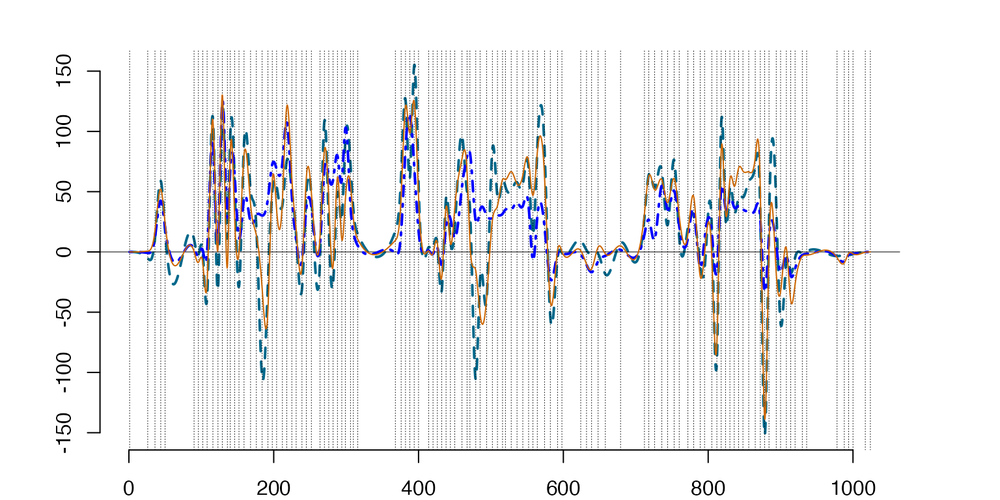
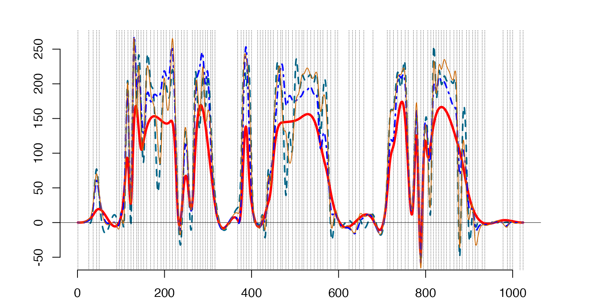
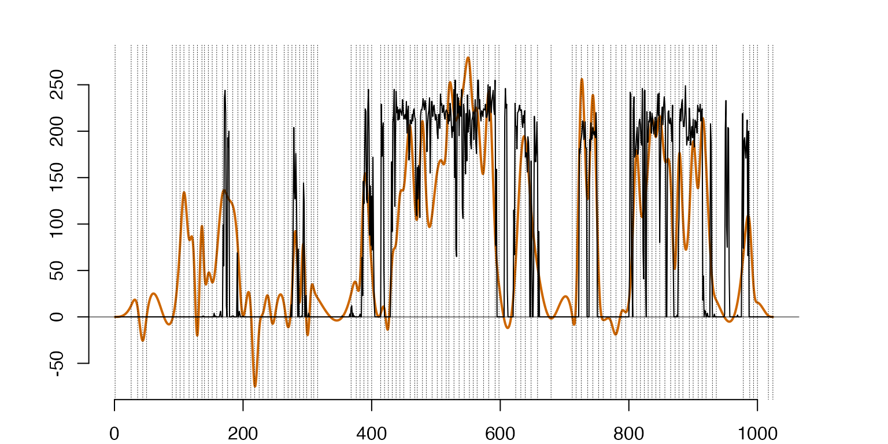

Image Classification with Splinets
ImageClassification.Rmd
library(Splinets)Data Preprocessing
This step involves transforming the two-dimensional images into a one-dimensional format for analysis. The example in the source uses the Hilbert curve transformation, which preserves local correlations between image pixels better than simply stacking the image’s columns or rows
#####################################
#The code accompanying the R-journal paper on Splinets package
# PART II - The code illustrating the classification workflow
#####################################
#####################################
#STEP 1 - DATA PREPROCESSING
##############
#The Fashion MNIST are uploaded using the `keras` package
#that in turn needs the `tensorflow` package
##########
#The following installations are needed merely to get access to the data
source("WorkFlowAuxFunction.R") #This source all important R-functions helping in the workflow,
#for example, 'data_upload()' and 'data_prep()' are defined in this file
# fashion_mnist=data_upload(pathfile="../data/fashion_mnist.RData") #check parameters of this function
#in 'WorkFlowAuxFunction.R' if the data
#are not previously uploaded.
# load(file = "../data/fashion_mnist.RData")
load(file = "fashion_mnist.RData")
# OneD=data_prep(dname='fashion_mnist')
# save(OneD,file="OneD.RData")
load(file = "OneD.RData")Once the data are properly formatted, we divided into three parts. The first and largest part constitutes the training data, and the remaining are split into two, the validation and testing.
#Spliting the training data into classes
K=10
ArgH=OneD$Hilberttrain[,60001] #common vector of arguments
ValH=OneD$Hilberttrain[,1:60000] #values
Htrain=list() #the classes are made the elements of a list
for(k in 1:K){
Htrain[[k]]=ValH[,fashion_mnist$train$y==(k-1)]
}illustrating the two formats of the data against the original images original images
par(mfrow = c(1, 2))
image(t(fashion_mnist$test$x[1,28:1,]),xaxt="n",yaxt="n")
image(t(fashion_mnist$test$x[20,28:1,]),xaxt="n",yaxt="n")
images transformed by vectorization
###
par(mfrow = c(1, 2))
plot(OneD$coltrain[,60001],OneD$coltrain[,1],type='l',xlab='',ylab='')
plot(OneD$coltrain[,60001],OneD$coltrain[,20],type='l',xlab='',ylab='')images transformed by the Hilbert curve
Knot selection for the mean and the centered data
The Data-Driven Knots (DDK) selection algorithm is applied to the training data to select class-specific knots. This algorithm identifies areas of high curvature within each class and places knots accordingly, minimizing the mean square error. This process is crucial for efficient analysis and directly impacts the accuracy of the classification.
# Step 2 Knot selection
# The main work in this step is done by the 'DDK' package.
# The critical function from this package is 'add_knots()'.
#install.packages("devtools")
# library(devtools)
# devtools::install_github("ranibasna/ddk")
library(DDK)
#Generating fitting to the noise criterion for the stopping rule
set.seed(1)
# AvRelErr=StopCurve() #the function is described in the sourced file, it takes some time.
# save(AvRelErr,file = 'StCv.rda') #If planned to be used in the future it is good to save the results not run it again.
load('StCv.rda')
########
#Running the code to select knots for the mean
NInit=10 #the number of the initial to be randomly chosen knots
NKnt=150+NInit+2
# set.seed(1)
# MnKnts=MeansKnots(MeanTr,ArgH,NKnt,NInit,AvRelErr,L=2)
# save(MnKnts,file = 'MnKnts.rda') # save the knots for the mean
load('MnKnts.rda') #load the knots for the mean
#Running the code to select knots for the centered data
NK=1000
CDTrain=list()
for(k in 1:K){
CDTrain[[k]]=Htrain[[k]][,1:NK]
CDTrain[[k]]=CDTrain[[k]]-MeanTr[,k] #Centering the data
}
#The main part, selection of the knots for the centered data
# CDKnts=CentDatKnots(CDTrain,AllKnts,MnKnts$knts,NKnt=150,AvRelErr)
# save(CDKnts,file = 'CDKnts.rda') # save the knots for the centered data
load('CDKnts.rda') #load the knots for the centered data Projecting discrete training data to functional spaces of splines
Projecting Training Data Into Spline Spaces: The discrete training data points are projected onto third-order data-driven splinet bases, which are constructed based on the class-specific knots determined in the previous step.
#####################################
#STEP 3 - DATA PROJECTION TO SPLINE SPACES
##############
# Projecting means to the spline space
# MeanSplines=list()
# for(k in 1:K){
# MeanSplines[[k]]=project(cbind(ArgH,MeanTr[,k]),MnKnts$knts[[k]])
# }
#
# #Projecting data -- this is time consuming
# HSplns=list()
# for(k in 1:K){
# HSplns[[k]]=project(cbind(ArgH,Htrain[[k]]),CDKnts$knts[[k]])
# }
# save(MeanSplines,HSplns,file = 'Projections.rda') #save the results
load('Projections.rda') #load the resultsillustrates the knot selection process
Here we plot the selected knots for the mean functions and the centered data.
Discrete mean ‘T-Shirt’ (solid line) vs. the functional fit μˆ (dashed line) obtained by the optimal knots marked by vertical dotted lines.
the mean `T-Shirt’
####################
#FIGURES
########
k=1
prmean=MeanSplines[[k]]
plot(prmean$sp,lty=2,lwd=3)
lines(ArgH,MeanTr[,k],type='l',col='red') #T-shirt mean
lines(prmean$sp,lty=2,lwd=3)
Fitting the centered ‘T-shirt’ by a spline with selected knots,
prTSh=project(cbind(ArgH,CDTrain[[k]][,1]),CDKnts$knts[[k]])
plot(prTSh$sp,lty=2)
lines(ArgH,CDTrain[[k]][,1],type='l',col='red') #T-shirt centered
lines(prTSh$sp,lty=2,lwd=2)
- the stopping rule curve and the stopping time for the means
Visualization of the stopping algorithm for the knots for the mean functions.
NInit=10; KK=150
plot((NInit+2):(NInit+KK+1),AvRelErr[(NInit+2):(NInit+KK+1)],type='l',lwd=2,col='red',xlab='Number of Selected Knots',ylab='Relative Error Drop')
for(k in 1:K){
nonzerr=MnKnts$err[[k]][(NInit+2):MnKnts$nknots[k]]
RelErr=-diff(nonzerr)/nonzerr[2:length(nonzerr)]
RelErr[1:10]=cumsum(RelErr[1:10])/(1:10)
avpar=3
xx=filter(RelErr,rep(1/avpar,avpar),sides=1)
RelErr[11:length(xx)]=xx[11:length(xx)]
lines((NInit+2):(NInit+length(RelErr)+1),RelErr,type='l',col=k)
}
Visualization of the stopping algorithm for the knot selection of the centered data.
plot((NInit+2):(NInit+KK+1),AvRelErr[(NInit+2):(NInit+KK+1)],type='l',lwd=2,col='red',xlab='Number of Selected Knots',ylab='Relative Error Drop')
for(k in 1:K){
nonzerr=CDKnts$err[[k]][MnKnts$nknots[k]:length(CDKnts$err[[k]])]
nonzerr[nonzerr==0]=rep(min(nonzerr[nonzerr!=0]),length(nonzerr[nonzerr==0]))
RelErr=-diff(nonzerr)/nonzerr[2:length(nonzerr)]
RelErr[1:10]=cumsum(RelErr[1:10])/(1:10)
#xx=filter(RelErr,c(1/10,1/10,1/10,1/10,1/10,1/10,1/10,1/10,1/10,1/10),sides=1)
avpar=3
xx=filter(RelErr,rep(1/avpar,avpar),sides=1)
RelErr[11:length(xx)]=xx[11:length(xx)]
lines(MnKnts$nknots[k]:(CDKnts$nknots[k]-1),RelErr,type='l',col=k)
}
#######Functional Principal component analysis
Functional Principal Components Analysis (FPCA) on Training Data: FPCA is performed within each class on the functional data points of the training set to understand the complexity of the data and prepare for classification.
The spectral decomposition of the training data.
############################################
#STEP 4 - PRINCIPAL COMPONENT ANALYSIS
##############
#Computing the covariance matrix of the isometric vectors from the `splinets' object
Sig=list()
Spct=list()
for(k in 1:K){
Sig[[k]]=cov(HSplns[[k]]$coeff) #The estimates of covariance
#(variables as columns observations as rows)
Spct[[k]]=eigen(Sig[[k]]) #columns of Spct[[k]]$vectors are eigenvectors as columns
}
#the end of STEP 4
##########################################The first three eigenfunctions for the ‘T-shirt’ class scaled by the square roots of the respective eigenfunctions.
#####################
#FIGURE 7 - illustration of the role of eigenfunctions
########
k=1 #T-Shirt
#Eigenfunctions using 'Splinets'-package
EigHSplns=lincomb(HSplns[[k]]$basis,t(Spct[[k]]$vectors))
ScEHSp=lincomb(subsample(EigHSplns,1:3),diag(c(sqrt(Spct[[k]]$values[1:3]))))
plot(ScEHSp)
#####Two approximations of the centered functional ‘T-shirt’ data point (NavyBlue-Dashed Line): 1) by the first three eigenfunctions (Blue-DottedDashed Line) ; 2) by the first twenty eigenfunctions (Orange-ThinSolid Line).
###
#Top-Left Graph: projections of the centered data
k=1
HS1=subsample(HSplns[[k]]$sp,1) #Chosing the functional data point
#Embeding mean to the spline space with the knots for eigenfunctions
RFMeanSplines=refine(MeanSplines[[k]]$sp,newknots=CDKnts$knts[[k]])
#Centering the data point
CHS1=lincomb(gather(HS1,RFMeanSplines),t(c(1,-1)))
neg=20 #The number 'neg' of the eigenfunctions
EHSNeg=subsample(EigHSplns,1:neg) #Extracting `neg` eigenvalues
A1=gather(RFMeanSplines,EHSNeg) #Combining the mean with the eigenfunctions
A2=gather(A1,CHS1) #Adding the centered funtional data point
IP=gramian(A2)
#Aproximations of the centered data:
CtAppNg=lincomb(EHSNeg,t(IP[2:(neg+1),2+neg])) #'neg' eigenvalues
CtAppThree=lincomb(subsample(EHSNeg,1:3),t(IP[2:4,2+neg])) #three eigenvalues
plot(CHS1,sID=1,lty=2)
lines(CtAppThree,lty='dotdash',col="blue")
lines(CtAppNg,lwd=1,col='darkorange3')
The same approximation but centered around the ‘T-Shirt’ class mean μˆ1 (Red-ThickSolid Line).
###
#Bottom-Left - projections of the functional 'T-Shirt' data point centered around the class mean
A=t(c(1,IP[2:(1+neg),2+neg])) #Coefficients of the projections to the eigenfunctions
ApprxNeg=lincomb(A1,A) #The approximation with the first `neg` eigenfunctions
A1=subsample(A1,1:4) #Taking 3 eigenfunctions
A=t(c(1,IP[2:4,2+neg]))
ApprxThree=lincomb(A1,A)
plot(HSplns[[k]]$sp,sID=1,lty=2)
lines(MeanSplines[[k]]$sp,type='l',lwd=3,col='red') #Mean value spline
lines(ApprxThree,lty='dotdash',col="blue")
lines(ApprxNeg,lwd=1,col='darkorange3')
###Projection of a ’Boot’ data point to the ’T-Shirt’ spectrum with 20 eigenfunctions after centering around the ’T-Shirt’ class mean, the discrete‘Boot’ data point (Black-Rough Line) vs. the projection (Orange-Solid Line).
#Bottom-Right - projections to the 'T-Shirt' of the functional 'Boot' data point centered around the 'T-Shirt' class mean
m=10 #The boot clase
Boot2TSh=project(cbind(ArgH,Htrain[[m]][,1]),CDKnts$knts[[k]]) #projection of boots to 'T-Shirt'
#Centering the 'Boot' data point with the 'T-Shirt' mean
CDBoot2TSh=lincomb(gather(Boot2TSh$sp,RFMeanSplines),t(c(1,-1)))
A1=gather(RFMeanSplines,EHSNeg) #Combining the mean with the eigenfunctions
A2=gather(A1,CDBoot2TSh) #Adding the centered funtional data point
IP=gramian(A2)
A=t(c(1,IP[2:(1+neg),2+neg])) #Coefficients of the projections to the eigenfunctions
ApprxNegB2T=lincomb(A1,A) #The approximation with the first `neg` eigenfunctions
#pdf('Fig7BottomRight.pdf',width=7,height=4)
plot(ApprxNegB2T,lwd=1,col='darkorange3')
lines(cbind(ArgH,Htrain[[m]][,1]),type='l')
##Determining the significant number of the eigenfunctions
This step uses the classification procedure on the validation data set to ascertain the optimal number of eigenfunctions for each class. This validation step is crucial for preventing overfitting and ensuring accurate classification.
###########################################
#STEP 5 - DETERMINING SIGNIFICANT NUMBER OF THE EIGENFUNCTIONS
##############
#Computing the covariance matrix of the isometric vectors from the `splinets' object
#Preparing the arguments for Classify function
#Embeding mean to the spline space with the knots for eigenfunctions
Mean=list()
for(k in 1:K){
Mean[[k]]=refine(MeanSplines[[k]]$sp,newknots=CDKnts$knts[[k]])
Mean[[k]]=project(Mean[[k]],knots=CDKnts$knts[[k]]) #To get also the coefficients in the splinet
}
# save(Mean,file='Mean.RData')
# load('Mean.RData')
#computing a list of eigenvectors based on 90% training data to make cross-validation 10% sample
#unbiased on the computation of covariance
CrossValid=list()
Eg=list()
set.seed(1)
for(k in 1:K){
xy=dim(Htrain[[k]])
ns=sample(1:xy[2],floor(xy[2]/10),rep=FALSE) #choosing a random sample for cross-validation
NN=1:xy[2]
CrossTrainCff=HSplns[[k]]$coeff #Columnwise coefficients in the basis
#removing 10% of the splines:
CrossTrainCff=CrossTrainCff[-ns,]
CrossValid[[k]]=Htrain[[k]][,ns] #Discrete 10% data on which crossvalidation is made
Sigma=cov(CrossTrainCff)
Eg[[k]]=eigen(Sigma) #columns of Eg[[k]]$vectors are eigenvectors
}
# save(CrossValid,Eg,file='CrossValid.RData')
# load('CrossValid.RData')
#The initial run of classification, it also create the Spline representation of the data
#that later significantly save time, when Classify is run again (it needs then to be given as the
#last parameter to 'Classify()').
# nn=rep(-1,K) #only knot selection utilized for classification
# ClValue=list()
#
# for(k in 1:K){
# DiscrData=cbind(ArgH,CrossValid[[k]])
# ClValue[[k]]=Classify(DiscrData,Mean,Eg,nn)
# }
# save(ClValue,file='ClValue.RData')
load('ClValue.RData')
#the following yields the mean values of scaled distances for classes k=1,...,K
#This is what classification one can get when only using the knot selection.
for(k in 1:K){
print(mean(ClValue[[k]]$wghts[k,]))
}
#> [1] 0.08558239
#> [1] 0.1026267
#> [1] 0.08864395
#> [1] 0.08985855
#> [1] 0.09073909
#> [1] 0.08843436
#> [1] 0.08072168
#> [1] 0.09398921
#> [1] 0.07503983
#> [1] 0.07505798
SplData=list()
for(k in 1:K)
{
SplData[[k]]=ClValue[[k]]$spldt
}
#The beginning of searching for the optimal number of the eigenvalues
nn=rep(0,K) #The means and the knots are used for classification
ClValue=list()
for(k in 1:K){
DiscrData=cbind(ArgH,CrossValid[[k]])
ClValue[[k]]=Classify(DiscrData,Mean,Eg,nn,SplData[[k]])
}
#the following yields the mean values of scaled distances for classes k=1,...,K
#This is what classification one can get when only using the mean and the knot selection.
zz=1:K
for(k in 1:K){
#print(mean(ClValue[[k]]$wghts[k,]))
zz[k]=mean(ClValue[[k]]$cls==k)
print(mean(ClValue[[k]]$cls==k))
}
#> [1] 0.665
#> [1] 0.875
#> [1] 0.3283333
#> [1] 0.7116667
#> [1] 0.6566667
#> [1] 0.7516667
#> [1] 0.2283333
#> [1] 0.795
#> [1] 0.76
#> [1] 0.8633333Testing the Classification Procedure
The testing step involves classifying each data point in the testing set by projecting it onto the ten functional spaces and utilizing the classification rule. The results are then compared with the actual class memberships and summarized in the confusion matrix to assess the method’s efficiency.
#############################################
#Preparation of the testing data sets
#Spliting the testing data into classes
ArgH=OneD$Hilberttest[,10001] #common vector of arguments
TestH=OneD$Hilberttest[,1:10000]
Htest=list() #the classes become elements of a list
for(k in 1:K){
Htest[[k]]=TestH[,fashion_mnist$test$y==(k-1)]
}
#end of the testing data preparationClassification of the testing data
#Running the test of the classification procedure on testing data, takes some time.
# TesT=list()
# for(k in 1:K){
# DiscrData=cbind(ArgH,Htest[[k]])
# TesT[[k]]=Classify(DiscrData,Mean,Spct,nn0) #nn0-contains the number of eigenvectors for each class
# #Spct - the spectrum based on all training data
# }
# save(TesT,file='TesT.RData')
load('TesT.RData')
Acc=vector('numeric',K)
for(k in 1:K){
Acc[k]=mean(TesT[[k]]$clss==k) #Computing accuracies per class
}
Acc*
mean(Acc)
#> [1] 0.5547374 0.7293912 0.4631788 0.6285998 0.5039570 0.6647616 0.2731370
#> [8] 0.7001540 0.7009234 0.7009234
Dist=vector('numeric',K)
for(k in 1:K){
Dist[k]=mean(TesT[[k]]$wghts[k,]) #Computing distances per class
}
round(Dist,3)
#> [1] 0.054 0.047 0.056 0.051 0.050 0.046 0.063 0.028 0.047 0.028